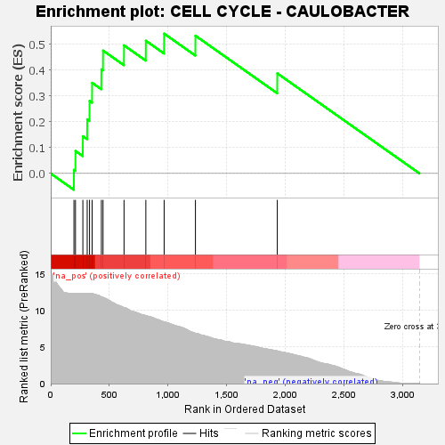
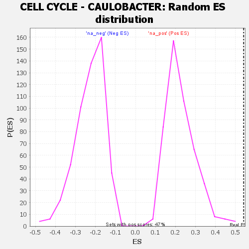

| | | Dataset | GSEA RNK clr Maaslin2 MucosalvsLuminal KO - DistalColon.rnk |
| Phenotype | NoPhenotypeAvailable |
| Upregulated in class | na_pos |
| GeneSet | CELL CYCLE - CAULOBACTER |
| Enrichment Score (ES) | 0.54059833 |
| Normalized Enrichment Score (NES) | 2.3871806 |
| Nominal p-value | 0.0 |
| FDR q-value | 0.00168954 |
| FWER p-Value | 0.021 |
Table: GSEA Results Summary

Fig 1: Enrichment plot: CELL CYCLE - CAULOBACTER
Profile of the Running ES Score & Positions of GeneSet Members on the Rank Ordered List

Fig 2: CELL CYCLE - CAULOBACTER: Random ES distribution
Gene set null distribution of ES for CELL CYCLE - CAULOBACTER